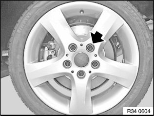
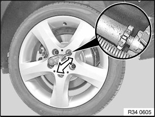
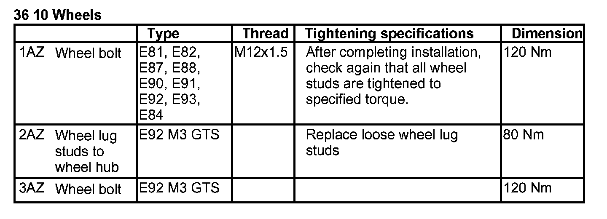

Parking Brake System: Adjustments
34 10 014 Adjusting handbrakeSpecial tools required:
Perform inspection in the following manner:
When 1st ratchet is engaged, no braking force should be exerted.
The difference in wheel circumferential forces between the left and right wheels may deviate by max. 30 % from the greater value (measured on brake analyzer).
In event of larger deviations of wheel circumferential force: carry out readjustment.
Braking with locked wheels must be possible with the parking brake.
The parking brake must be reset if the actuation stroke is greater than 10 teeth.
Note:
Accurate adjustment of the parking brake is only possible if the parking brake Bowden cables and all moving parts on the parking brake move easily and function correctly.
Basic setting of the parking brake is required:
- Parking brake shoes and attachment parts are replaced
- Brake discs are replaced
- In event of excessive actuation stroke (10 teeth)
- When replacing parking brake Bowden cables

1. Adjusting instructions for brake shoes (basic setting)
Unclip gaiter for parking brake lever.
Lock adjuster unit (ASZE).
Actuate parking brake lever. Insert special tool 32 1 030. Press stop (1) of adjusting spring back to such an extent that retaining hook (2) engages in stop (1).
Completely unscrew one wheel stud on each rear wheel.
Installation:
Tightening torque 36 10 1AZ.
Turn wheel until adjustment screw is visible in tapped hole.


Turn adjusting screw with a screwdriver until wheel can not be turned anymore by hand.
Then at adjusting screw:
^ Release 185 dia. duo-servo brake 8 notches
^ Release 160 dia. duo-servo brake 9 notches
Important!
Basic adjustment with fewer than 8 notches on the duo-servo brake may lead to the brake shoes being damaged. Reducing the number of notches on the duo-servo brake to shorten lever travel is not permitted.
Unlock adjuster unit (ASZE).
Lever out restraining hook (2) with a suitable screwdriver.
Restraining hook (2) must detach from stop (1) of adjusting spring.

Important!
Follow instructions for Brake testing for test stand.
2. Adjusting instructions for parking brake Bowden cables
The parking brake lever must be applied 5 times with medium hand force.
2.1 On brake test stand
0th tooth (parking brake released):
Vehicles with manual transmission: Shift lever in neutral position.
Vehicles with automatic transmission: Selector lever position "N".
- Without locking differential ≤ 150 N.
- With locking differential ≤ 200 N (possibly odd display).
1st tooth:
No increase in braking force with regard to 0th tooth.
Indicator lamp can be lit.
2nd tooth:
Indicator lamp must be lit.
3rd tooth:
Increase in braking force.
5th tooth:
The brake force display must have reached ≥ 400 N.
Checking brake force differential at wheel:
Apply parking brake until a wheel circumferential force (brake force display) of min. 1000 N is reached.
Max. permitted brake force differential right/left ≤ 35 % (referred to greater brake value).
3. Bedding in the duo-servo parking brake
The following braking-in procedures are applicable in case of insufficient braking effect or after replacing brake discs and/or brake shoes.
3.1 On brake test stand
Apply parking brake lever until wheel circumferential force at first wheel is 800 N.
Lock parking brake lever in next lower tooth.
Important!
Brake bedding-in time max. 2 minutes!
3.2 When driving on road
(If possible inside the company grounds or on an unused road)
When driving at low speed (max. 40 km/h) apply parking brake lever until a braking effect can be felt.
Pull parking brake lever into the next detent and continue driving for max. approx. 400 meters (max.40 km/h).
A basic requirement is that parking brake is adjusted uniformly.
Note:
If necessary, repeat braking-in procedure.
Allow brake to cool down sufficiently.
